双相机 Real2Sim 标定记录
把实验台上的两个 Logitech Brio 100（top 俯视、side 侧视）放进 MuJoCo 方块任务场景，让 sim 渲染的画面和真实相机的画面在几何上重合。本页按实际操作顺序记录方法、每一步的数据、失败的尝试和误差来源，供后期写论文使用。

01方法与坐标约定
真实相机要进 sim，需要两组参数：
- 内参：焦距 fx、fy，主点 cx、cy，镜头畸变 k1 k2 p1 p2 k3。只和镜头有关，用标定板拍多张照片求出。
- 外参：相机在 sim 世界坐标系里的位置和朝向。sim 的坐标系由手定义，所以必须经由一个"相对于手的位置已知"的物体来求。
T_board_cam 由图像自动求出，非常准；T_world_board 靠卷尺量棋盘相对于前臂塔的位置，是整个流程的主要误差来源。
坐标约定
- 场景
scene_right_cube_orientation.xml：手装在 (0, 0, 0.16)，手指指向 +x，掌心朝 +z，拇指在 −y 一侧。 - 前臂塔（
ForeArmStructure+TopTower）：x −0.058…0.099，y −0.057…0.037，z 0.112…0.208 m。前端面 x = 0.099，小指侧面 y = 0.037。sim 塔宽 94 mm，真实塔量得 93 mm。 - OpenCV → MuJoCo 相机坐标：
R_mj = R_cv · diag(1, −1, −1)，xyaxes取R_mj的前两列。 - MuJoCo 3.x 相机：
focalpixel="fx fy"，principalpixel="W/2−(cx+0.5) H/2−(cy+0.5)"。这是相对图像中心的偏移，并有 0.5 px 的像素中心约定差；最初写错符号时主点误差 19.5 px，修正后 < 0.1 px。
02标定板与程序验证
- ChArUco 板 7 × 5 格，方格 35 mm，标记 26 mm，字典 DICT_5X5_100（方块上的 AprilTag 用 36h11，二者不会混淆）。US Letter 100% 打印，贴在 4.53 mm 厚的硬板上。
- 尺寸校验：100 mm 检查条 = 100 mm；7 格 245.0 mm（35.00 mm/格），5 格 174.5 mm（34.90 mm/格），差异在钢尺读数误差内，保持 35.0。
- 选 ChArUco 的原因：每个角点有编号，只拍到部分板子也能用，拍画面边角时很关键。
合成数据端到端测试
上真机之前，先用 MuJoCo 扮演"真实相机"（已知内参、畸变、位姿）去拍棋盘，再让流程从图像里还原（tests/test_real2sim_cameras.py）：
| 项目 | 真值 | 还原值 |
|---|---|---|
| fx（top） | 1000 | 998 |
| k1（top） | −0.08 | −0.085 |
| top 位置 / 朝向误差 | – | 3.37 mm / 0.293° |
| side 位置 / 朝向误差 | – | 0.48 mm / 0.055° |
| sim 与"真实"角点（含没参与标定的新位置） | – | 0.05–0.11 px |
结论：程序本身的误差远小于后面真机测量带来的误差。
03内参标定（四轮）
工具：capture.py（两个相机并排预览，SPACE 保存）→ calibrate_intrinsics.py（cv2.calibrateCamera，自动剔除误差 > 3 倍中位数的照片，输出 3 × 4 的角点覆盖表）。前后四轮才合格：
| 轮次 | 结果 | 问题 | 诊断依据 |
|---|---|---|---|
| 1 失败 | top fx 1362；side fx 2141，k3 = 24.9 | 覆盖不全：top 右半边、side 最左列和最下行没有角点 | 覆盖表；同型号相机 fx 相差 57%；k3 不合理 |
| 2 失败 | top fx 1762；side fx 1962 | side 70 张几乎相同（自动保存时棋盘不动）；20 张太近失焦 | 逐张统计角点位置和清晰度（~13 vs 正常 ~40） |
| 3 失败 | side RMS 0.91 px | 纸没贴平，棋盘呈波浪形 | 照片中格线弯曲 |
| 4 不完整 | side RMS 0.55 px | 最下一行覆盖为 0：相机贴近桌面，棋盘下沿总停在桌面线 | 所有照片角点 y 最大值 ≈ 560 |
| 4+ 合格 | side RMS 0.59 px，12 格全覆盖 | 暂时抬高相机补拍 16 张 | – |

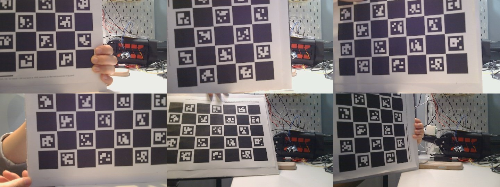

- RMS 小不代表结果对。第 1 轮 side 的 RMS 只有 0.46 px，fx 却错了 57%：覆盖不全时，错误的焦距加夸张的畸变也能拟合好中间那块区域。
- 用同型号相机互相印证，再用规格核对（Brio 100 对角视场 58°，1920×1080 下 fx ≈ 1987）。
- 定焦相机太近会失焦；棋盘要完整入画，宽度占画面的 1/4–1/2；每张都换位置和角度，不要开自动保存。
- 内参与相机放在哪里无关，可以暂时移动相机去补拍拍不到的区域。
最终内参（1920 × 1080）
| top | side | |
|---|---|---|
| 照片数 | 32 | 43 |
| RMS 重投影误差 | 0.675 px | 0.587 px |
| fx, fy | 1960.11, 1956.53 | 1935.71, 1931.20 |
| cx, cy | 981.47, 525.55 | 945.93, 502.02 |
| 视场 水平 / 垂直 | 52.2° / 30.9° | 52.8° / 31.2° |
| k1, k2 | 0.1728, −0.8304 | 0.1739, −0.7092 |
| p1, p2 | 0.0019, 0.0006 | 0.0008, 0.0007 |
| k3 | 1.1616 | 0.4968 |
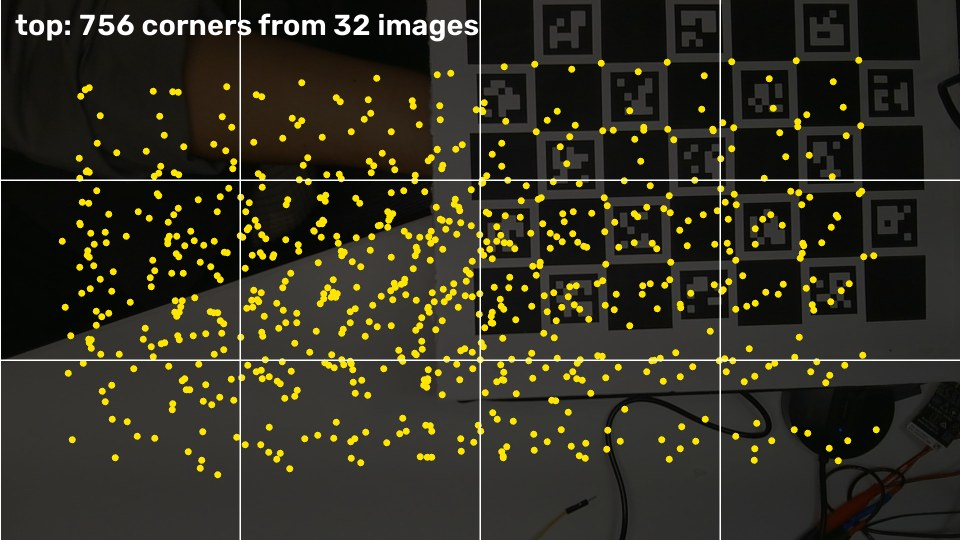

- top 的 RMS 0.675 px 略高于 0.5 的经验目标。逐张检查：每张都在 0.39–1.03 px、分布均匀，没有离群照片，推测来自手持晃动和 MJPG 压缩。50 cm 处约 0.17 mm，可以接受。
- 两个相机 fx 相差 1.3%，畸变系数接近，属于同型号个体差异。
- MuJoCo 渲染的是无畸变针孔图像：真实帧在和 sim 比较或输入 sim 训练的策略之前，要先
cv2.undistort(img, K, dist)。
04相机摆放

外参拍完后，相机和手都不能再动。实际操作中这出过两次问题，见 05 和 06 节。
05top 外参
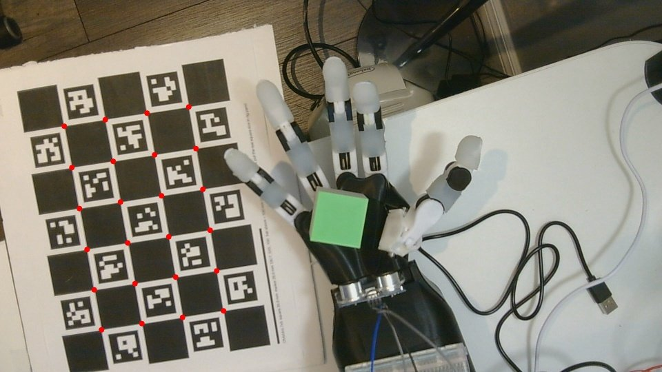
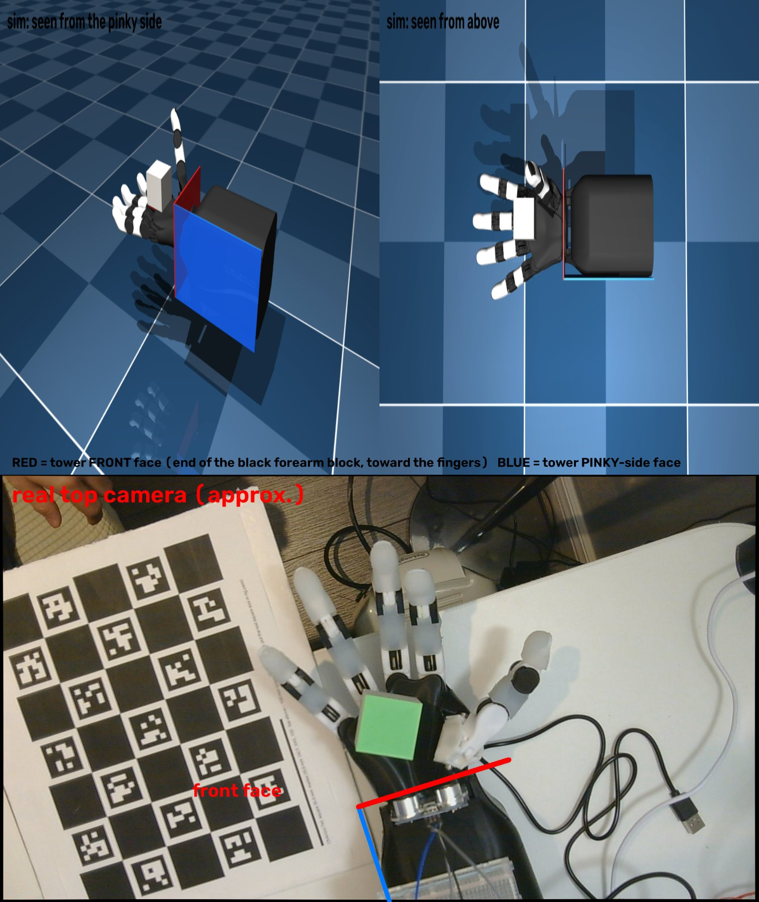
需要量的量：H 塔底面离桌面 = 20 mm（桌面 z = 0.112 − 0.020 = 0.092）；T 硬板厚 4.53 mm；D 前端面 → 格子图案远端（靠指尖）；B 小指侧面 → 格子图案最近的边。棋盘 245 × 175 mm：
第一次测量（D = 201 mm，B = 55 mm）
相机 (0.197, −0.019, 0.663) m，5 帧之间位置差 0.9 mm、角度差 0.09°。把 sim 的手按这个位姿渲染、叠到真实画面上，刚体前臂塔的边缘偏差约 10–20 px（约 3–5 mm）。

在塔的区域对暗色轮廓做 IoU 最大化，搜索 (dx, dy, dyaw)。IoU 从 0.534 升到 0.604，但最优解 dx = +8 mm 落在搜索范围边界上，说明是在"凑"。真实塔上放了面包板和线缆，黑色外壳还反光，轮廓提取不干净，因此没有采用。

手被移动后重测（D = 209 mm，B = 50 mm）
手的位置变了，top 外参必须重做（sim 坐标系跟着手走，相机不用动）。重测时出了两个意外，都是靠检查结果发现的：
- 文件夹混入手移动前的 5 张旧照片，9 帧之间位置差 216 mm。移走旧照片后恢复正常。
- 棋盘方向放反（100 mm 横线朝外），相机算到 y = 0.363，sim 的手完全不在画面里。配置改为
yaw = 180°后恢复正常，不用重拍。
最终：相机 (0.197, −0.014, 0.664) m，4 帧，重投影 0.42 px，帧间差 0.46 mm / 0.045°。两次独立摆放、独立测量，相机位置只差约 5 mm，这就是卷尺测量的重复性。

相机被轻微碰到后的修正
top 外参拍完后相机被碰了一下。correct_bump.py 把外参照片和碰后照片的静止背景做 ORB 匹配（356 个点），用纯旋转模型拟合两组视线方向（SVD）：转了 0.171°，残差中位数 0.93 px。残差这么小说明纯旋转假设成立；如果相机还平移了，残差会有好几个像素，程序会拒绝修正。0.17° 在手的位置约 1.5 mm。
06side 外参
放弃的方案
- 棋盘立在手和相机之间，靠目测对齐竖直和平行：太难，误差大。
- 两个相机同时看一块斜放的棋盘：棋盘的世界位姿由已标定的 top 给出，side 一个数都不用量（已实现：
--via side=top:SESSION）。但 side 相机当时离手只有约 30 cm，斜放的棋盘总有一个相机看不全。

最终方案：棋盘贴着塔立起来
棋盘背面贴紧塔的小指侧面立在桌上，印刷面朝 side 相机，横线在下。这样竖直和平行自动满足，只需要量两个短距离：
- a = 130 mm：前端面 → 格子图案靠指尖的边
- M = 45 mm：桌面 → 格子图案下边缘
结果：相机 (0.190, 0.578, 0.140) m，5 帧，重投影 0.53 px，帧间差 1.66 mm / 0.164°。
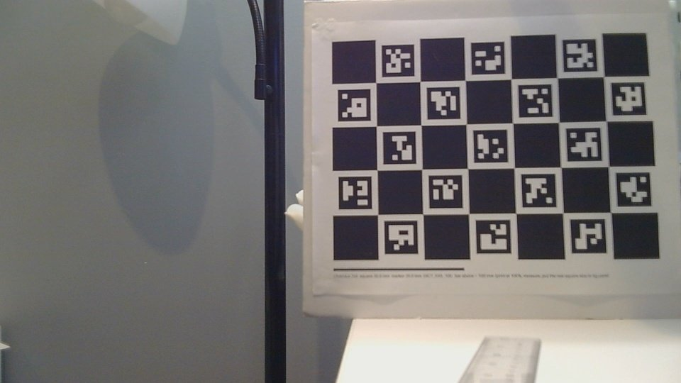
07sim 桌面与"残影"
第一次叠加时 top 视角出现两个往右偏的"残影"。原因：sim 有两盏会投射阴影的灯，手在地面上投下两个影子；sim 地面在 z = 0，比真实桌面低 92 mm，斜射光让影子远离手。关掉阴影后残影消失，说明与相机标定无关。

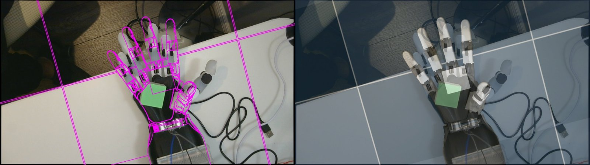
处理：在 _real2sim 场景里加一个顶面在 z = 0.092 的桌面（rig.yaml 的 bench）。训练场景不变，因为训练环境用 z < 0.05 判断方块掉落，改原场景的地面会破坏它。验证：方块掉在手旁静止于 z = 0.1108（理论 0.110）；side 视角 sim 桌面边缘和真实桌面重合。在 _real2sim 场景上跑任务环境时，drop_height 要改到约 0.13。

08最终结果与误差预算
| top | side | |
|---|---|---|
| 位置 (m) | (0.197, −0.014, 0.664) | (0.190, 0.578, 0.140) |
| 外参重投影 | 0.42 px | 0.53 px |
| 帧间一致性 | 0.46 mm / 0.045° | 1.66 mm / 0.164° |
| sim 与真实的手（目测，刚体） | 10–20 px（3–5 mm） | 10–20 px（3–5 mm） |
| 误差来源 | 量级 |
|---|---|
| 相机相对棋盘（solvePnP，多帧平均） | < 1 mm，< 0.2° |
| 内参 | 0.6–0.7 px ≈ 0.2 mm @ 50 cm |
| 棋盘相对手（卷尺 + 目测对齐）—— 主要误差 | ±1–2 mm，±1–2° |
| top 碰撞修正 | 0.17°，残差 0.9 px |
| sim 模型与真实手 | 塔宽 94 vs 93 mm |
| 合计（两次独立测量的重复性） | ≈ 5 mm |
局限与后续
- 还没做定量的独立验证（棋盘放到新的、量过的位置，算角点误差）；
overlay.py已支持。 - 手指关节状态未知，目前只用刚体部分（塔、手腕）检验；用真实舵机角度驱动 sim 关节即可对齐手指。
- 更高精度：在前臂塔上贴一个位置已知的标记，去掉卷尺这一环。
- 真实桌面在指尖前方就到边，sim 桌面没有建模这个边缘。
- 相机或手移动后外参要重做，内参不用；小幅碰撞可用
correct_bump.py修正。
09超声波数字孪生
HC-SR04 由 ESP32-S3 驱动（ORCA Ultra Sonic/src/main.cpp，TRIG 10 / ECHO 18，约 10 Hz，输出 Distance: xx.x cm），接在 COM4（FTDI）上；手的舵机适配器在 COM3。read_ultrasonic.py 通过"监听哪个口在输出距离"找端口，不向任何端口写数据。传感器装在透明支架上，探头高度对准方块中部，正对方块的近面。
传感器位置：用两个相机定位
- +y 一侧的探头在两个相机里都看得到（用 top 视线在 side 图像里画极线确认对应点），三角测量；−y 探头用 top 视线与同一高度求交。
- 两探头间距算出 26.4 mm（规格 26 mm）。中心 (0.1069, −0.0107, 0.2010) m，朝向水平、偏 −15.2°，指向手指。
- sim 传感器：25 条 rangefinder 组成 15° 半角圆锥，读数取最近命中。单条射线会从方块旁擦过、完全打不到；7.5° 圆锥读 41.7 mm；15° 读 28.4 mm。
距离实验（方块面与传感器平行）
每个位置同时拍两个相机并读传感器。"相机"是在 side 画面里、传感器高度上量出的探头前端面到方块近面的水平距离，作为参考值。
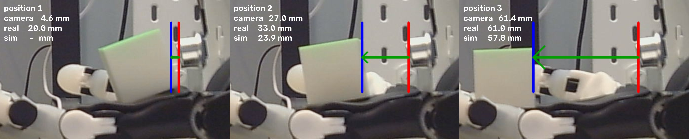
| 位置 | 方块所在 | 相机（参考） | 真实 | sim 几何 | sim 标定后 | sim − 真实 |
|---|---|---|---|---|---|---|
| 1 | 靠近手腕 | 4.6 | 20.0（恒定） | 5.3 | 20.0 | 0.0 |
| 2 | 手掌中间 | 27.0 | 33.0 | 23.9 | 26.8 | −6.2 |
| 4 | 约 4 cm | 42.2 | 39.0 | 40.0 | 42.9 | +3.9 |
| 3 | 手掌远端 | 61.4 | 61.0 | 57.8 | 60.7 | −0.3 |
| 5 | 中指第二指节上 | 77.1 | 80.0 | 74.4 | 77.3 | −2.7 |
| 6（验证） | 约 5 cm，新位置 | 54.0 | 52.0 | 53.0 | 55.9 | +3.9 |
单位 mm，按距离排序；位置编号是采集顺序。
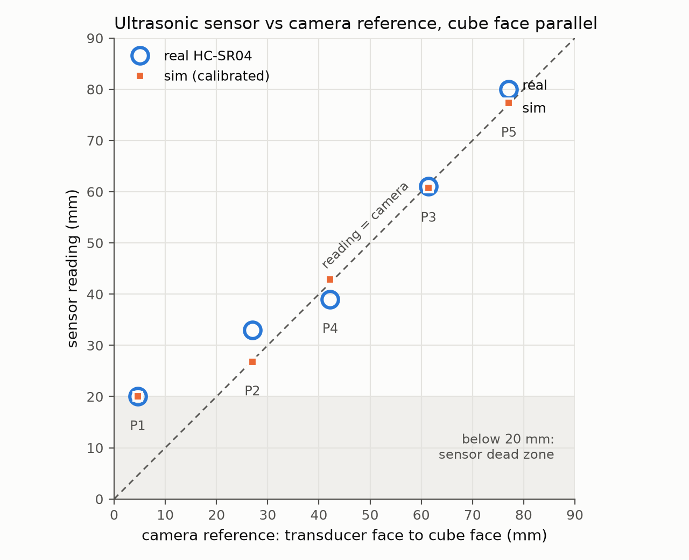
- 真实传感器（位置 2–5）：拟合 读数 = 0.97 × 相机 + 3.1 mm，残差约 ±4 mm，没有明显的固定偏差或比例误差；离散程度与相机参考值本身的误差相当。2 cm 以内是盲区，读数卡在 20 mm。
- sim 几何距离：比相机参考值稳定地短 2.9 ± 0.6 mm，是固定偏差：0.5 mm 来自 sim 方块（36 mm）比真实（35 mm）大，其余来自 top 与 side 相机之间的微小不一致。
- 标定后的 sim：读数 = max(圆锥内最近命中 + 2.9 mm, 20 mm)（
rig.yaml的range_offset_m、min_range_m）。与真实传感器：盲区一致；位置 2–5 平均绝对误差 3.3 mm，RMS 3.9 mm（样本内）。 - 样本外验证：参数固定后在新位置 6（约 5 cm）测试，sim 55.9 mm、真实 52.0 mm，误差 +3.9 mm，与样本内同一量级，模型对新位置同样成立。
- 倾角用估计值或竖直、是否加入射角限制（< 20°），结果差 < 1 mm，因为这些位置的面都正对传感器。
用户观察到：方块面不平行于传感器（例如转 45°）时读数会变。这是超声波的镜面反射，斜面把声波反射到别处。"圆锥内最近距离"模型不包含这一点。下一步用贴 AprilTag 的方块，在手指拨动方块的真实过程中逐帧采集方块姿态和读数，加入入射角模型后对比。
同步录制（三路数据对齐）
real2sim/recording/record.py：top 相机、side 相机、超声波各一个线程，数据到达即用同一个时钟打时间戳，原始数据分别保存。align.py：每个超声波读数配上时间最近的 top 帧和 side 帧，输出aligned.csv（t, us_mm, top_file, top_dt_ms, side_file, side_dt_ms, ok）。ok = 1表示两帧都在 25 ms 以内；不删行，只标记。- 发现并修复的错位：串口在相机启动（约 1 分钟）期间已打开，FTDI 驱动积压了 602 行旧读数且清不掉，录制开始时一次性到达、时间戳全错。修复后相机就绪才开串口，并丢弃积压；
align.py检测读数是否挤在一起。 - 修复后 8 秒测试：两个相机 30 fps、无丢帧；超声波每秒 10 个；78 个读数中 74 个两帧都在 25 ms 以内（中位数 8.9 ms），其余 4 个已标记。
- 到达时间 ≠ 采集时间（相机曝光与 USB 延迟、FTDI 约 16 ms 缓冲）。测出的延迟写在
real2sim/recording/latency.json，align.py默认使用。 - 录制有提示窗口：相机启动中 → 3 秒倒计时 → 红框"● 正在录制"，CSV 只保留倒计时之后的数据。
延迟测试
- sync01：方块没动（动作做在录制开始前）→ 加了提示窗口。
- sync02：手推方块来回 5 次，互相关得 top +148 ms、side +86 ms，但相关峰在 ±100 ms 内几乎一样高，"动作起点"的比较也互相矛盾：慢斜坡 + 长平台 + 10 Hz 超声波 + 盲区异常值，测不准，作废。
- sync03：瞬间事件。方块拿开，卡片快速插进传感器前方再抽出；相机只看光束区域的帧间变化（精度一帧）。
| 对比 | 中位数 | MAD | 事件数 |
|---|---|---|---|
| top − 超声波 | +9 ms | 8 ms | 6 |
| side − 超声波 | −27 ms | 22 ms | 6 |
| side − top | −49 ms | 14 ms | 5 |
三路到达时间本来就基本对齐（约一帧以内）。超声波约 100 ms 才采样一次，事件平均晚约 50 ms 出现在读数里，这部分随机、无法用固定偏移修正，是时间精度的上限（约 ±50 ms）。对齐 sync03：197 个读数中 190 个两帧都在 25 ms 以内，中位数 8 ms。
AprilTag 方块
训练好的 PPO 观测的是关节状态 + 方块红色面的世界方向 + 它离朝上还差多少，不看图像，所以真实部署只需要方块的朝向，不需要 YOLO。方块六个面贴 AprilTag 36h11（27 mm，按 35 mm 方块生成），只要求 id 0 贴在绿色面（对应 sim 的红色面），其余标签的实际位置由程序从 407 张"同时看到 ≥ 2 个标签"的照片里测出（id 1 在 id 0 对面，只能经由侧面标签间接相连）。
| 标签 | 面 | 法向偏离 | 偏离面中心 |
|---|---|---|---|
| 0 | +z（绿色面） | 0.0°（基准） | 1.8 mm |
| 1 | −z | 4.3° | 3.4 mm |
| 2 | −x | 0.8° | 1.9 mm |
| 3 | +x | 0.5° | 1.7 mm |
| 4 | −y | 0.3° | 1.8 mm |
| 5 | +y | 0.3° | 1.8 mm |
- 同一帧里两个标签各自算出的方块姿态中位数相差 3.1 mm / 2.6°；改为所有可见标签角点一起做一次 PnP，重投影中位数 3.0 px，与逐标签平均的朝向相差中位数 0.9°。
- 放弃的尝试：交替优化标签布局与每帧姿态，误差从 3.5 px 发散到 23 px，已删除。
- 坑：OpenCV 5 的
solvePnPRefineLM传入一维平移向量(3,)时结果翻转约 180°，必须用(3, 1)。
两个相机的一致性
- 先拍 top、隔一两分钟再拍 side：方块中心相差 25 mm；改用同步录制（帧差 5.9 ms）仍差 23.5 mm，不是方块移动造成的。
- 差距在各自的深度方向上，两个相机都认为方块"更远"。两次独立采集求得让两相机最一致的标签尺寸为 26.20 / 26.26 mm，而实测打印尺寸 26.8–27.0 mm：检测到的外角点比黑框往里缩约 2.8%（标签只有 90–130 像素，模糊和 JPEG 吃掉约 1 像素黑边；棋盘格交叉点不受影响）。设定
effective_tag_mm = 26.25后差距降到 10 mm。 - 放弃：两相机角点放进同一个 PnP。每个相机只有一个标签时，算法把朝向扭歪约 15° 去迁就约 10 mm 的不一致。
- 采用：分开求解再融合。朝向取平均；位置加权最小二乘，沿视线（深度）方向权重 0.1。每个相机与融合结果差约 5 mm、3°；sim 超声波 30.6 mm vs 真实 33.0 mm（差 2.4 mm）。
- 精度：位置约 5–10 mm，朝向约 3–5°，剩余误差主要来自两个相机外参之间约 5–10 mm 的不一致。
用训练好的 policy 拨动方块（run01）
policy_to_replay.py 在 sim 里运行训练好的 PPO（方块朝向取相机测得的真实朝向），把 sim 达到的关节角转换成 orca_core replay_continuous.py 的格式，由用户在真实手上回放（开环）。安全措施：手腕锁定在中立位、放慢 8.6 倍（≤ 60°/s）、截断到 joint_roms（真实 thumb_mcp 只有 −5°~40°）、开头结尾各 2 秒过渡；先空跑确认。
过程：0–8 秒方块在手掌上；约 7 秒拇指压到方块，方块倾斜；9–23 秒拇指按住方块；约 24 秒方块被弹飞（推测是回到中立位时），用户按 Ctrl+C，硬件无损。单个标签的两个姿态解现在按"与上一帧最接近"来选，避免来回跳。
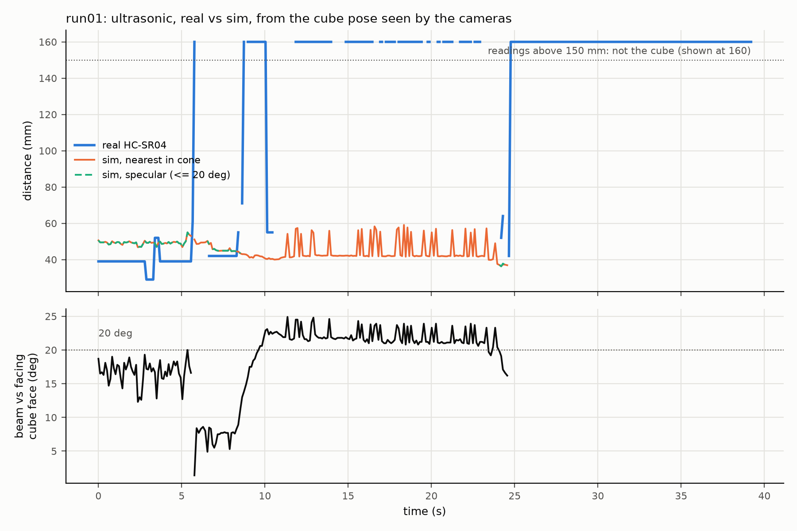
| sim 模型 | "能否测到方块"与真实一致 | 都测到时 sim − 真实 |
|---|---|---|
| 圆锥内最近距离 | 36%（80/223） | +9.8 mm |
| 入射角 ≤ 20° 才有回波 | 94%（209/223） | +9.9 mm |
- 方块倾斜后正对面与光束夹角 21–25°，真实传感器读到墙（> 640 mm）或无回波，与用户观察一致；入射角模型能复现，最近距离模型不能。
- 阈值未被确定：倾斜阶段集中在 21–25°，能测到的阶段 ≤ 20°；θ = 18° / 20° / 22° 时一致率 86% / 88% / 50%，需要覆盖更多角度的数据。
- 距离偏差 +10 mm：方块位置来自两相机融合，x 方向约 10 mm 系统偏差（两相机之间 5–10 mm 的不一致）；直接用 side 画面测距时误差在 ±4 mm 内。
入射角阈值（angle01 / angle02）
方块放在手掌上，用手捏住远离传感器的一侧，绕竖直方向在 ±45° 之间慢慢来回转，同步录 60 秒。angle01 作废：方块约 2 cm、大部分读数是盲区饱和值 17 / 20 mm（分析现在自动排除 < 25 mm 的读数）。angle02：方块约 7 cm，真实读数中位数 74 mm。
| 正对面与光束夹角 | 真实测到方块的比例 |
|---|---|
| 10–20° | 83% |
| 20–25° | 71% |
| 25–30° | 39% |
| 35–40° | 4% |


| sim 射线阈值 | run01（约 4 cm） | angle02（约 7 cm） | 合计 |
|---|---|---|---|
| 15° | 94% | 63% | 72% |
| 20° | 95% | 75% | 81% |
| 25° | 90% | 88% | 88% |
| 30° | 90% | 87% | 88% |
| 不限制（最近距离） | 36% | 51% | 46% |
采用 25°（rig.yaml 的 ultrasonic.max_incidence_deg），样本内选出，需新数据验证。重新生成后：run01 一致 91%，angle02 一致 88%；都测到时 angle02 sim − 真实中位数 −0.1 mm（MAE 7.3 mm），run01 为 +9.8 mm（靠近手腕处两相机融合偏差更明显）。
policy 回放 run02 与关节姿态检查
run02 结尾改为先松拇指、速度上限 40°/s，但手指张得过开、方块掉了。原因：sim 的 policy 从"全部关节 0°"（伸直）开始，还会把手指往反方向掰（ring_mcp −24.7°、middle_mcp −17°、pip −14.6°）；thumb_mcp 有 74% 时间被截断在真实上限 40°；放慢 13 倍后动态接触失效。即使关节标定准确，开环回放 sim policy 也难以复现操作。
关节姿态检查（real2sim/hand/pose_check.py）：回放 6 个已知姿态并录制，自动找到回放开始时刻，把 sim 手按相同关节角渲染叠到画面上。
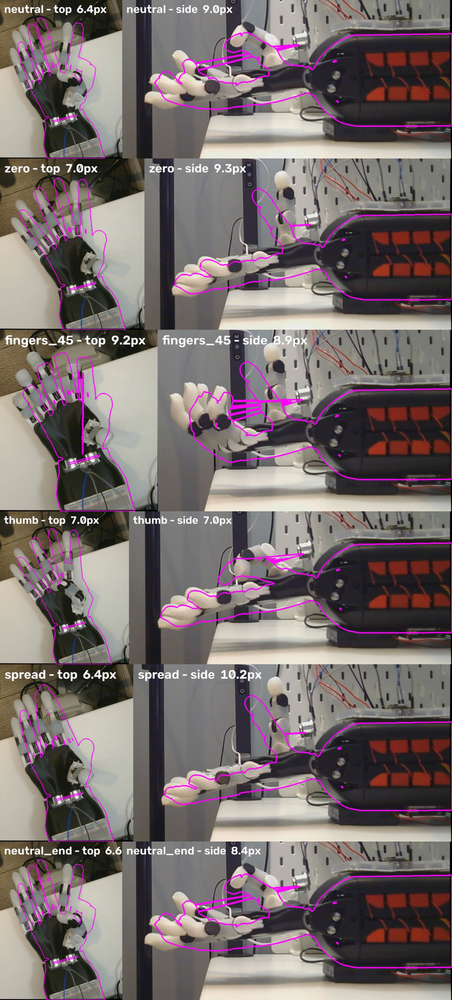
- top：所有姿态下 sim 手都比真实手往拇指侧偏并转了一个角度（真实手指整体向小指方向偏约 10–15°），手腕附近对齐；改 sim 手腕角度几乎不影响（手腕关节是上下弯）。
- side："全 0°"姿态下 sim 手腕取 0° 最吻合（8.0 px），取指令值 −9.6° 更差（9.3 px）：手腕约 5–10° 偏差。
- 四指上下弯曲大致对得上；拇指偏差较大。真实关节标定（orca_core
calibration.yaml）最后更新于 2026-09-08；orca_teleop-main里的是遥操作双目相机标定和重定向参数，不是关节标定。
重新标定后（posecheck03）：用 calibrate.py 重新标定了四指和拇指（手腕跳过），用同一个姿态检查文件再录。评分 = sim 手外轮廓到真实画面边缘的中位距离：
| 姿态 | top 前 → 后 (px) | side 前 → 后 (px) |
|---|---|---|
| 中立位 | 6.4 → 7.0 | 9.0 → 8.4 |
| 全 0° | 7.0 → 6.2 | 9.3 → 8.2 |
| 四指 45° | 9.2 → 8.6 | 8.9 → 8.6 |
| 拇指弯曲 | 7.0 → 7.0 | 7.0 → 7.0 |
| 张开 | 6.4 → 6.0 | 10.2 → 9.2 |
| 中立位（结束） | 6.6 → 6.4 | 8.4 → 8.0 |
| 平均 | 7.1 → 6.9 | 8.8 → 8.2 |

只有小幅改善（top −3%，side −7%）。残余偏差集中在小指和无名指：真实的这两根手指比 sim 更向外偏，食指、中指基本对齐；可能是外展关节零点偏差或模型与实物的几何差异。评分包含背景边缘，只反映大致趋势。
外展关节检查（abdcheck01）：食指、无名指、小指外展依次停在 −20° / +20°。按手指单独扫描修正量的自动拟合不可信（多个结果落在扫描边界；相邻手指外形相似，轮廓会贴到旁边手指的边缘），改为直接画图判断。

- 无名指和小指的外展方向在 sim 和真实手上相反：sim 的 + 是往里收，真实手指令变大时往外张。
sim_to_real.py只为 index_abd 做了符号翻转。 - 真实的"0°"比 sim 更往外张。按
sim = −指令 + 偏移比较，无名指约 −20°、小指约 −25°~−30° 最贴合（目测，±5–10°）。
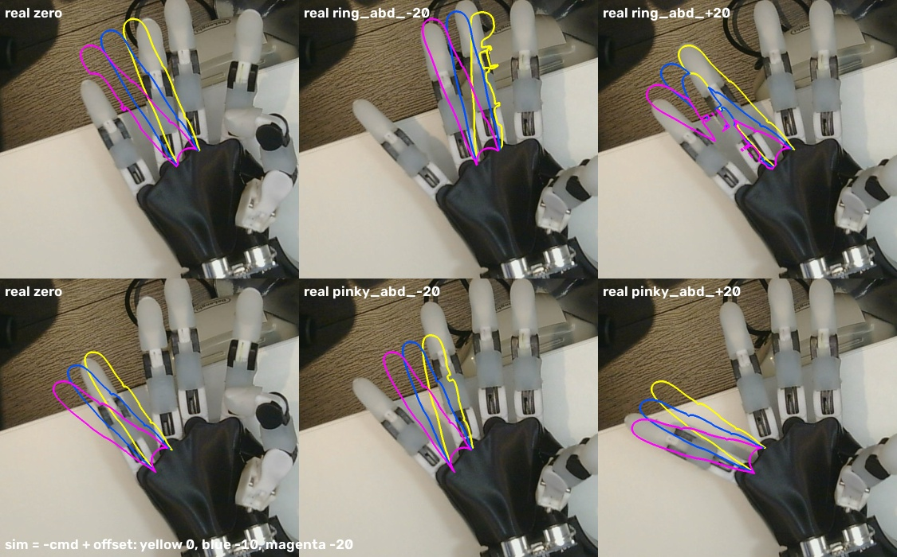
结论：top 视角的残余偏差主要来自这两个关节的符号相反 + 零点偏移，重新标定无法消除，需要在 sim↔真实的关节映射里修正。
修正与验证（abdcheck03）：joint_map.py 对 ring_abd、pinky_abd 用 sim = −指令 + 偏移（−20°、−27°）。以 sim 角度为目标生成检查文件并重新录制：

- 修正后的轮廓在"全 0°"、小指 sim 0° 等姿态贴合真实手指；旧映射预测的小指几乎水平，真实小指较竖直。其余姿态也更接近，仍有几度偏差。
- 偏移量在 abdcheck01 上估计，在独立录制 abdcheck03 上成立。
- 限制：sim 小指外展 0° 对应真实约 −27°，接近真实极限 −30°，真实小指往里收的余量比 sim 小。
run03：手腕 −10°~+10° 与完整数字孪生的对齐
- 修正映射 + 手腕 −10°~+10°。sim 里允许手腕后 policy 0.75 秒完成（锁手腕时 2 秒内未完成）。
- 过程：开始时方块在盲区（20–29 mm）；约 4 秒手指张开、手腕转动；6.5 秒拇指推方块；7.8 秒方块滑落；14.3 秒用户放回方块。录制 22 秒。
- 前臂塔没有被带动（
tower_check.py）：首尾帧塔区域位移中位数 0.00 px，相机外参和超声波位置仍有效。 - 只看方块的 sim 一致率仅 45%：手指在传感器前晃动，真实传感器常测到手指。
完整数字孪生（twin.py）：sim 手按回放指令运动、方块按相机姿态放置，超声波同时计算手和方块。但回放在录制中的开始时刻无法可靠确定：画面变化与指令速度相关系数仅 0.22；"静止后首次运动"被拇指推方块触发；姿态匹配对任何早于录制的开始时刻得分都约 6.0 px，没有唯一最优。run03 的完整孪生对比不采用。
解决：replay_logged.py 与 replay_continuous.py 控制方式相同（由用户运行、Ctrl+C 停止），另外记录每帧发出时的 perf_counter（Windows 上与录制程序同一个系统时钟）；record.py 把时钟原点写进 meta.json，twin.py 据此精确对齐。
run04：带时间记录的回放与完整数字孪生
用 replay_logged.py 回放，录制与回放精确对齐（回放第一帧 t = 87.651 s，录制开始 87.559 s；发出 822 / 1149 帧）。前臂塔位移约 1 px（0.25 mm）。方块约 4 秒掉落。


- 方块在手上时（0–4 秒）孪生回波来自方块，读数与真实接近（约 30–40 mm）。
- 方块掉落后孪生一直读到 22–29 mm，真实是 42–94 mm；"150 mm 内是否有东西"一致率 62%。
- 56 次采样里 49 次射线打到
R-T-AP（拇指根部）：sim 拇指根部摆进了 15° 圆锥，真实的没有。拇指是偏差最大的部位（thumb_mcp 74% 时间被截断在 40°，拇指关节尚未逐个检查）。
run05：绿色面朝小指、手腕锁定（方块第一次没有掉）
回放完整执行（961 帧）并精确对齐，方块全程留在手掌上。相机和塔没有动（top 背景转动 0.009°；塔后段位移 0.00 px；之前报的 19 px 是塔前端区域里移动的方块和拇指造成的误报）。
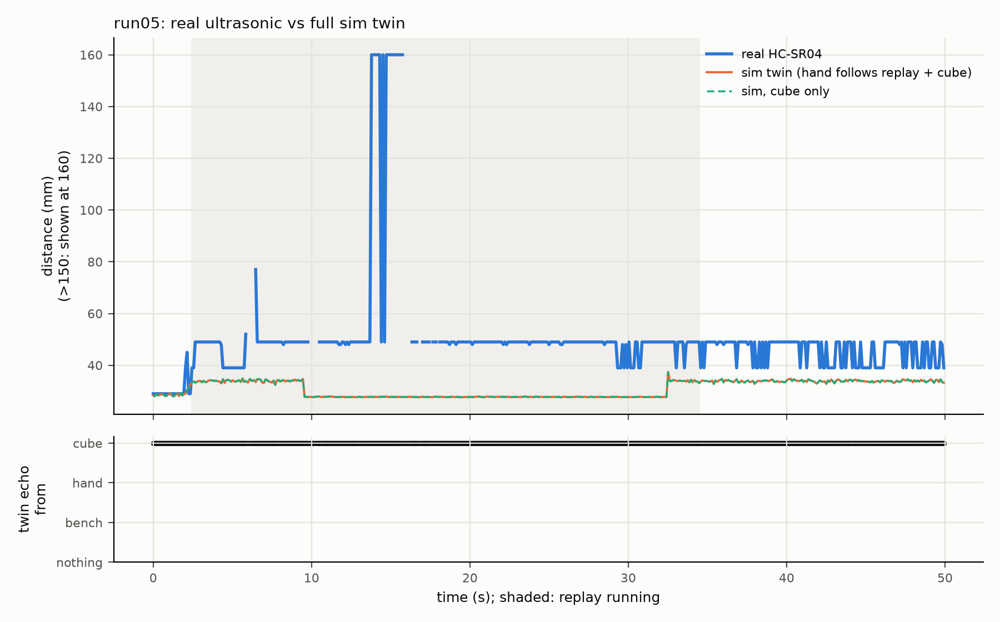
| 阶段 | 真实 | sim 孪生 | 正对面入射角 | 方块 x |
|---|---|---|---|---|
| 0–2 s（回放前） | 29.0 mm | 28.6 mm | 20.1° | 149.6 mm |
| 3–9 s | 49.0 mm | 34.0 mm | 17.9° | 154.7 mm |
| 10–30 s | 49.0 mm | 27.8 mm | 15.6° | 149.2 mm |
| 33–50 s（回放后） | 49.0 mm | 33.9 mm | 17.9° | 154.6 mm |
方块只移动约 5 mm、入射角 16–20°，但真实读数从 29 跳到 49 mm 并保持：真实传感器不再收到方块正面的回波，孪生（25° 阈值）仍判为方块。可能原因：HC-SR04 收发分离（两探头相距 26 mm），近距离时稍有倾斜的面会把反射打偏接收探头，容许角随距离增大，与阈值的距离依赖一致（约 4 cm 时 15–20°，约 7 cm 时 25–30°）。下一步：sim 里做收发分离的反射模型。
采集时注意：相机和串口同时只能被一个程序打开；不要大幅移动手腕，手和前臂塔上的传感器会一起移动，相机外参和传感器位置都会失效。
10复现命令
# 0. 打印标定板（Letter，100%），贴到硬板上，量 100 mm 检查条和格子总长 python real2sim/cameras/make_targets.py # 1. 内参（整块棋盘入画、覆盖四角四边、倾斜 30–45°、手动按 SPACE） python real2sim/cameras/capture.py intr_top --cams top python real2sim/cameras/capture.py intr_side --cams side python real2sim/cameras/calibrate_intrinsics.py intr_top --cam top python real2sim/cameras/calibrate_intrinsics.py intr_side --cam side # 2. 外参：top 棋盘平放（量 D、B），side 棋盘贴塔立起（量 a、M），写进 rig.yaml python real2sim/cameras/capture.py extr_top --cams top python real2sim/cameras/capture.py extr_side --cams side python real2sim/cameras/calibrate_extrinsics.py --cam-session top=extr_top --cam-session side=extr_side # 2b. 相机拍完后被轻微碰到 python real2sim/cameras/correct_bump.py top real2sim/data/extr_top/top/008.png real2sim/data/extr_top/after_bump.png # 3. 检查 & 生成图 python real2sim/cameras/show_scene.py --calibrated cd real2sim/cameras && python make_figures.py # 超声波 python hardware/ultrasonic/read_ultrasonic.py --raw
产物：real2sim/cameras/calib/cameras.json（位姿 + 内参）、top_intrinsics.json、side_intrinsics.json、src/orca_sim/scenes/v2/scene_right_cube_orientation_real2sim.xml、real2sim/cameras/rig.yaml（全部测量值及换算）。分支 real2sim-cameras。